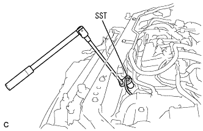
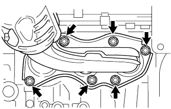
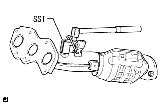

Air Fuel Ratio Sensor (2GR-FE) Removal |
| 1. Remove Radiator Upper Air Deflector |
 |
Remove the 9 clips and the radiator upper air deflector.
| 2. Remove Engine Under Cover |
Remove the 4 bolts and 4 screws, and remove the engine under cover.
| 3. Remove Engine Under Cover NO.1 |
Remove the 6 bolts and 7 clips, and remove engine under cover No.1.
| 4. Air Fuel Ratio Sensor NO.2 Removal |
Disconnect the air fuel ratio sensor No.2 connector.
 |
Using SST, disconnect the air fuel ratio sensor No.2 from the exhaust manifold.
| 5. Remove Exhaust Pipe Assembly Center |
Disconnect the oxygen sensor connector and clamp.
 |
Remove the 2 nuts and 2 bolts.
 |
Remove the 2 bolts and 2 compression springs, and remove the exhaust center pipe assembly.
| 6. Remove Exhaust Pipe Assembly Front |
 |
Disconnect the NO.2 oxygen sensor connector and, using SST, remove the oxygen sensor.
 |
Remove the 2 bolts and exhaust pipe bracket.
 |
Remove the 2 nuts and exhaust pipe assembly front.
Remove the gasket.
| 7. Remove Exhaust Manifold Sub-assembly RH |
Disconnect the air fuel ratio sensor connector.
 |
Remove the 6 nuts and the exhaust manifold RH.
| 8. Air Fuel Ratio Sensor Removal |
 |
Using SST, remove the air fuel ratio sensor.